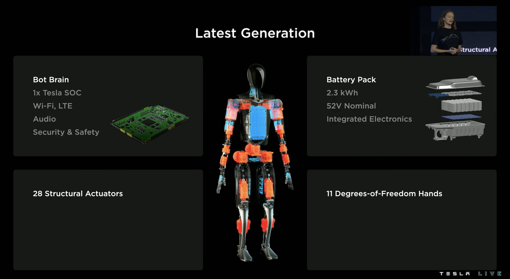

Optimus2022 AI Day设计原型
特斯拉 · 双足人形 · 原型
2022 AI Day的Latest Generation设计展示，与同场Bumble C、2021概念及2023 Gen 2分开。配图为Tesla原始架构slide的YC’s Note托管复本；本轮已目视复本但未回看完整官方原片，参数暂待审核。73 kg/200+ DoF/手27 DoF来自人体参照页，不是本机规格。

完整规格与依据
身体规格
- 身高
- 待核实
【代际不匹配】2021概念高度不代表2022样机；本轮所查2022原始架构图无机器人高度。
本项资料核验 2026-10-24；相关链接不表示厂商从未披露。 - 整机重量
- 待核实
【人体参照误读】同场Human Form的73 kg是人体参照，非机器人；本轮未取得样机绝对重量，不据此推导Gen 2。
本项资料核验 2026-10-24；相关链接不表示厂商从未披露。 - 自由度
- 待核实
【口径不兼容】原图28 Structural Actuators不是全机DoF；不能加双手11而宣称全身50。
本项资料核验 2026-10-24；相关链接不表示厂商从未披露。 - 末端执行器
- 单手11 DoF、6执行器 待审核 · 厂商资料
2022 Hands原slide；执行器数不等于DoF，手提袋示例不当单臂额定负载。原画面复本已目视，官方原片本轮未成功播放；暂待原片上下文复核，不参与数值筛选。
本项资料核验 2026-10-24
运动与操作
- 操作负载
- 待核实
【口径不兼容】Hands页示例手提20 lb袋子，不是指定姿态的持续额定单臂负载；2021概念45 lb也不继承。
本项资料核验 2026-10-24；相关链接不表示厂商从未披露。 - 移动速度
- 待核实
【本轮未找到】已查架构/手部原slide未给本版绝对m/s，不用2021概念目标补齐。
本项资料核验 2026-10-24；相关链接不表示厂商从未披露。
电池与工作
- 工作时间
- 待核实
【工况未核实】本轮没有取得可复核的单电池任务/工况时长；“工作一天”不量化成8/24 h。
本项资料核验 2026-10-24；相关链接不表示厂商从未披露。 - 电池能量
- 2,300 Wh 待审核 · 厂商资料
2022 Latest Generation设计：2.3 kWh→2300 Wh，52 V标称；不移植到Gen 2/Gen 3。原画面复本已目视，官方原片本轮未成功播放；暂待原片上下文复核，不参与数值筛选。
本项资料核验 2026-10-24 - 电池容量
- 待核实
【口径不兼容】原图直接给2.3 kWh/52 V标称而非mAh；计算约44231 mAh只是编辑推算，不冒充厂商原值。
本项资料核验 2026-10-24；相关链接不表示厂商从未披露。
感知与开发
- 感知配置
- 待核实
【待继续采集】本轮架构slide没有完整传感器型号/数量，Audio/WiFi等不拼成相机BOM。
本项资料核验 2026-10-24；相关链接不表示厂商从未披露。 - 计算平台
- Tesla SoC ×1（完整型号未列） 待审核 · 厂商资料
2022架构原图；未给TOPS/内存，不移用汽车计算型号。原画面复本已目视，官方原片本轮未成功播放；暂待原片上下文复核，不参与数值筛选。
本项资料核验 2026-10-24 - 二次开发
- 待核实
【本轮未找到】本轮架构/手部资料未确认对客户开放SDK和接口权限。
本项资料核验 2026-10-24；相关链接不表示厂商从未披露。
采购信息
- 美元报价
- 待核实
【不属于采购配置】展示原型设计没有可执行美元整机采购报价；目标成本不是售价。
本项资料核验 2026-10-24；相关链接不表示厂商从未披露。 - 人民币报价
- 待核实
【不属于采购配置】本轮未取得该原型人民币采购条款。
本项资料核验 2026-10-24；相关链接不表示厂商从未披露。
同型号的其他配置 / 代际
- Optimus 项目总览（含2026生产进展，未绑定代际）特斯拉 · 双足人形
- Optimus 2021概念目标（非实测）特斯拉 · 双足人形
- Optimus Gen 2（2023-12发布）特斯拉 · 双足人形